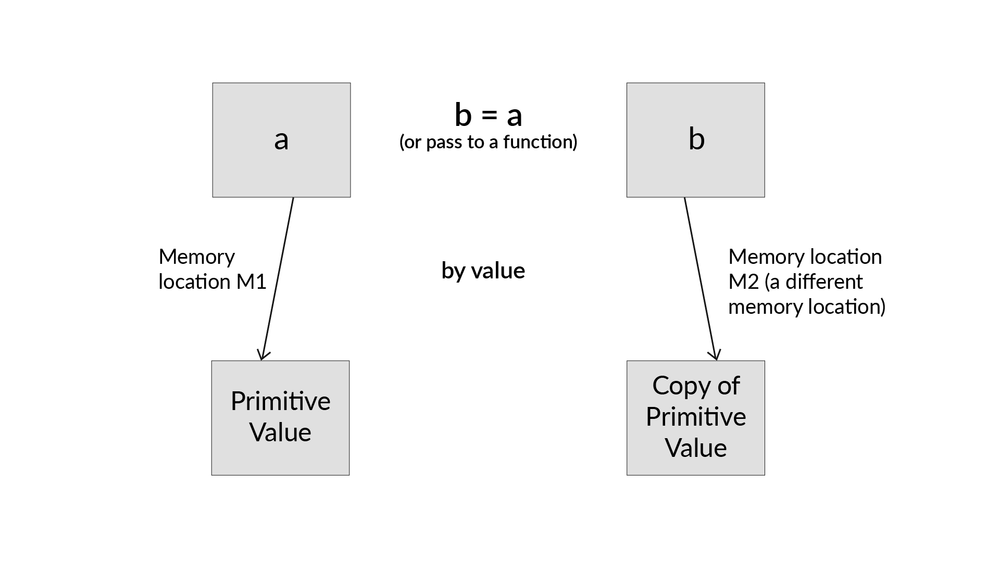
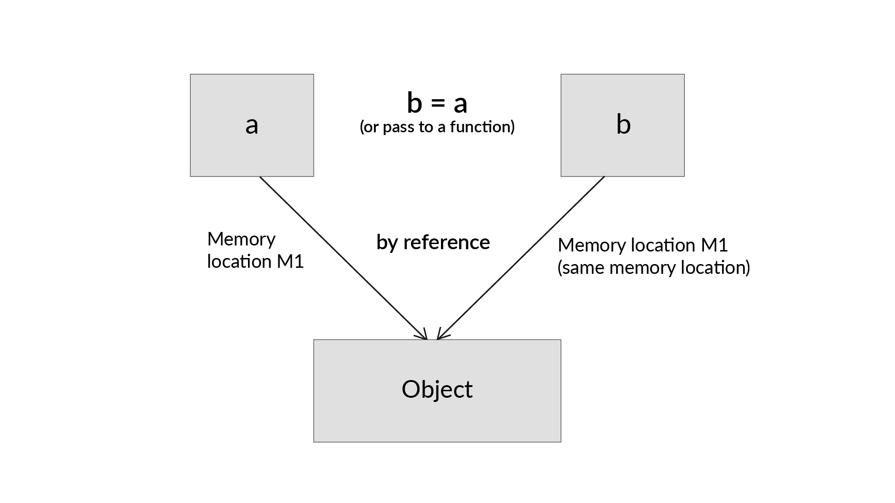

Learning Intermediate JavaScript:
Pass by Value Pass By reference
Pass-by-value:
Following is the illustration depicting
what goes on behind-the-scenes when you assign the value
contained in variable 'a' to another variable 'b'. Remember that both the variables are of primitive type.

Pass-by-reference:
Following is the illustration depicting what goes on behind-the-scenes when you assign the value contained in variable a to another variable b. Remember that both the variables are of custom type (object / array)

-
All the primitive data types in JavaScript are passed by value and the custom types such as objects and arrays are passed by reference.
-
When a variable refers to an object or an array, the "value"contained in the variable is a reference to the object / array.
-
Changing the value of a variable never changes the underlying primitive or object / array, it just points the variable to a new primitive or object / array.
-
Changing a property of an object / array referenced by a variable changes the property in the referenced object / array.